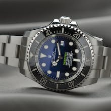

Our products

Elevate your style with our exquisite timepiece crafted for the modern connoisseur. Designed with precision and sophistication in mind.

Embark on your next adventure with confidence, equipped with our rugged chronograph watch. Engineered for durability and functionality.

Take control of your health and fitness goals with our innovative smartwatch designed for active living, Packed with advanced features.
Time is Precious be a Pulsenova
At Pulsenova, we believe that time is more than just a measurement — it's an expression of style, passion, and innovation. Founded with a vision to redefine the art of timekeeping, Pulsenova merges cutting-edge technology with timeless design to create watches that inspire and empower individuals around the world.
Our journey began with a commitment to craftsmanship and quality, guided by the ethos of blending tradition with innovation. Each Pulsenova timepiece is meticulously crafted using premium materials and state-of-the-art manufacturing techniques, ensuring durability, precision, and unparalleled elegance.
Driven by a passion for pushing boundaries, we continuously strive to innovate and evolve, embracing the latest advancements in watchmaking while staying true to our heritage. From classic designs to modern interpretations, our diverse collection caters to every style and occasion, reflecting the diverse tastes and preferences of our global community.